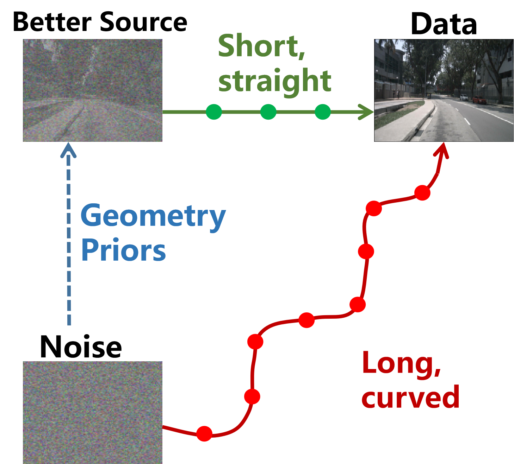

GeoFlow: Efficient Driving Video Generation via Geometry-Aligned Priors
European Conference on Computer Vision (ECCV), 2026
We construct a geometry-aligned prior as the starting distribution for driving video generation, shortening the sampling trajectory and improving few-step generation.